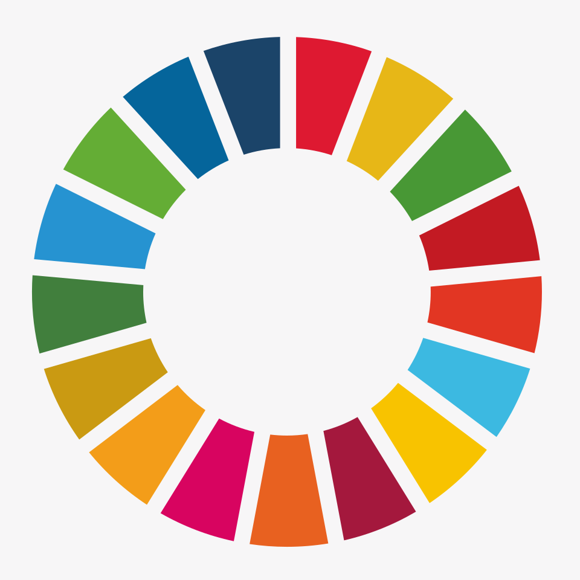
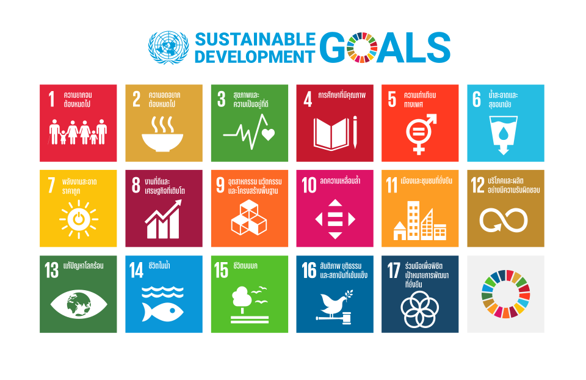

Em setembro 2015, foram criados os chamados ODS.Sigla para
objetivos e desenvolvimento Sustentaveis. esses objetivo, foram
criados pela UNU, na cúpila de nova york.
esses objetivos foram criados como metrica para os paises que fazem parye da UNU.
eles foram criados para que todos os paises compoem as a UNU sigam e tentem desenvolve-los.
Noa ODS temos varios objetivis citados, na verdade temos 17, aos quais vamos listar agora
- 1- Erradicação da pobreza:Acabar com a probreza em suas formas.
- 2- fome zero e agricultura sustentavel:promover a segurança alimentar,
melhorar a nutrição e fomentar a agricultura sustentavel.
- 3- Saúde e bem-estar: garantir uma vida sustentavel e promover o bem-estar
para todos em todas as idades
- 4- educacação da qualidade:Assegurar uma educação inclusiva, equitativa e de qualidade
- 5- igualdade de genero: Garantia que todas as pessoas tenham segurança, inclusive os LGBTQI+
- 6- Trabalho descente:que todos possam trabalham em condiões dignas.
- 7- indrustria e inovação
- 8- Redução e desingualdade
- 9- consumo e produção responsavel
- 10- Água potavel e saneamento
- 11- Energia limpa e sustentavel
- 12- ações contra mudança de clima
- 13- Vida e Água
- 14- vida terrestre
- 15- cidades e comunidades
- 16- paz e justiça
- 17- parceria para objetivos